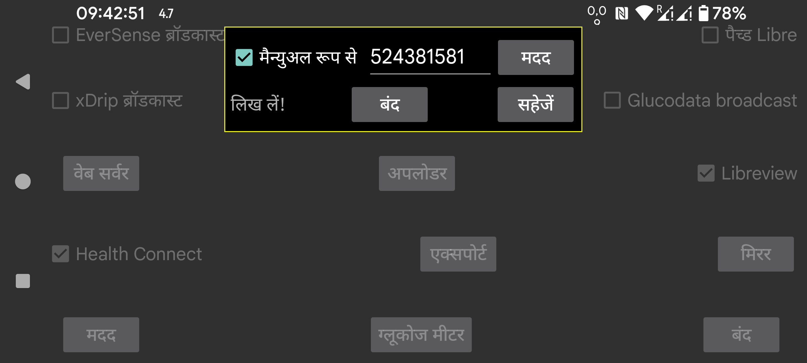

NFC के माध्यम से Freestyle Libre 3 सेंसर स्कैन करने के लिए आवश्यक Libreview Account ID कैसे प्राप्त करें? यदि आप "मैन्युअल रूप से" निर्दिष्ट करते हैं, तो आप मैन्युअल रूप से Account ID दर्ज कर सकते हैं। आप “मैन्युअल रूप से” को अनसेट भी कर सकते हैं और "Libreview से" दबाकर Libreview से इसे प्राप्त करने के लिए अपने अकाउंट के ई-मेल पते और पासवर्ड का उपयोग कर सकते हैं।
यह भी संभव है कि Libreview से Libreview Account id प्राप्त किया जाए और उसके बाद "मैन्युअल रूप से" सेट किया जाए और Libreview अकाउंट का ई-मेल पता और पासवर्ड बदला जाए। जब आप उसके बाद "Libreview को भेजें" सेट करते हैं और "डेटा पुनः भेजें" दबाते हैं, तो डेटा उस अलग Libreview अकाउंट को भेजा जाएगा, पर पिछला/मैन्युअल रूप से दर्ज किया गया अकाउंट ID अभी भी NFC के माध्यम से सेंसर स्कैन करने के लिए उपयोग किया जाएगा। इस तरह, Juggluco Abbott के Libre 3 ऐप द्वारा उपयोग किए जाने वाले अकाउंट से अलग Libreview अकाउंट को डेटा भेजता है।